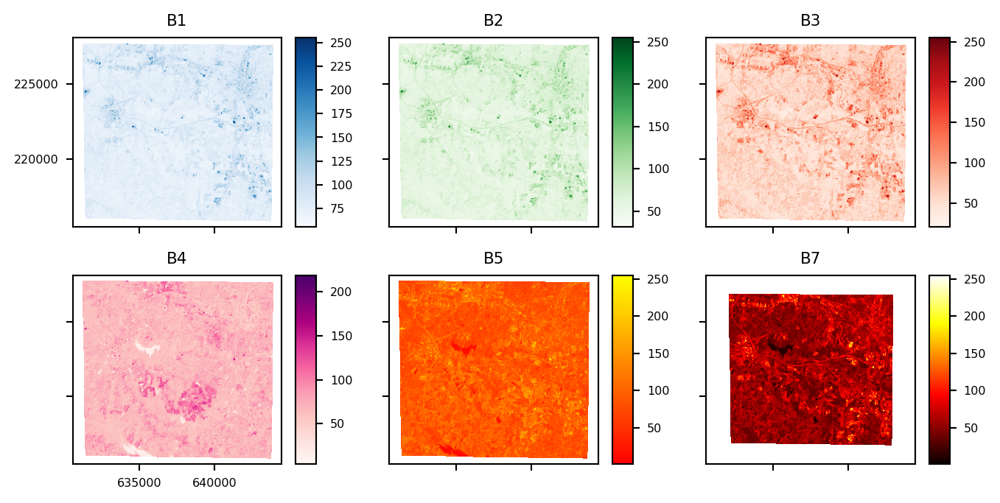
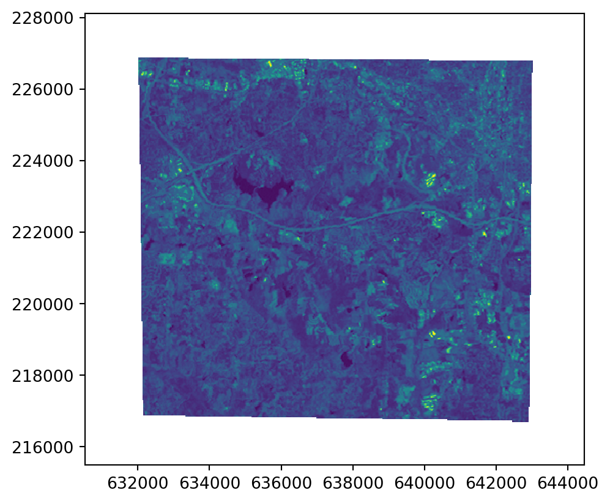

from pyspatialml import Raster
import pyspatialml.datasets.nc as nc
import matplotlib.pyplot as plt
predictors = [nc.band1, nc.band2, nc.band3, nc.band4, nc.band5, nc.band7]Quick start
Initiating a Raster Object
We are going to use a set of Landsat 7 bands contained within the nc example data:
These raster datasets are aligned in terms of their extent and coordinate reference systems. We can ‘stack’ these into a Raster class so that we can perform machine learning related operations on the set of rasters:
stack = Raster(predictors)When a Raster object is created, the names to each layer are automatically created based on syntactically-correct versions of the file basenames:
stack.namesdict_keys(['lsat7_2000_10', 'lsat7_2000_20', 'lsat7_2000_30', 'lsat7_2000_40', 'lsat7_2000_50', 'lsat7_2000_70'])Color ramps and matplotlib.colors.Normalize objects can be assigned to each RasterLayer in the object using the cmap and norm attributes for convenient in plotting:
stack.lsat7_2000_10.cmap = "Blues"
stack.lsat7_2000_20.cmap = "Greens"
stack.lsat7_2000_30.cmap = "Reds"
stack.lsat7_2000_40.cmap = "RdPu"
stack.lsat7_2000_50.cmap = "autumn"
stack.lsat7_2000_70.cmap = "hot"
stack.plot(
title_fontsize=8,
label_fontsize=6,
legend_fontsize=6,
names=["B1", "B2", "B3", "B4", "B5", "B7"],
fig_kwds={"figsize": (8, 4)},
subplots_kwds={"wspace": 0.3}
)
plt.show()
Subsetting and Indexing
Indexing of Raster objects is provided by several methods:
The Raster[keys] method enables key-based indexing using a name of a RasterLayer, or a list of names. Direct subsetting of a Raster object instance returns a RasterLayer if only a single label is used, otherwise it always returns a new Raster object containing only the selected layers.
The Raster.iloc[int, list, tuple, slice] method allows a Raster object instance to be subset using integer-based indexing or slicing. The iloc method returns a RasterLayer object if only a single index is used, otherwise it always returns a new Raster object containing only the selected layers.
Subsetting of a Raster object instance can also occur by using attribute names in the form of Raster.name_of_layer. Because only a single RasterLayer can be subset at one time using this approach, a RasterLayer object is always returned.
Examples of methods to subset a Raster object:
# subset based on position
single_layer = stack.iloc[0]
# subset using a slice
new_raster_obj = stack.iloc[0:3]
# subset using labels
single_layer = stack['lsat7_2000_10']
single_layer = stack.lsat7_2000_10
# list or tuple of keys
new_raster_obj = stack[('lsat7_2000_10', 'lsat7_2000_20')]Iterate through RasterLayers individually:
for name, layer in stack.items():
print(name, layer)lsat7_2000_10 <pyspatialml.rasterlayer.RasterLayer object at 0x17fb6b650>
lsat7_2000_20 <pyspatialml.rasterlayer.RasterLayer object at 0x11e5d21d0>
lsat7_2000_30 <pyspatialml.rasterlayer.RasterLayer object at 0x16d168bd0>
lsat7_2000_40 <pyspatialml.rasterlayer.RasterLayer object at 0x17f80cc90>
lsat7_2000_50 <pyspatialml.rasterlayer.RasterLayer object at 0x17fb6a110>
lsat7_2000_70 <pyspatialml.rasterlayer.RasterLayer object at 0x17fd92510>Replace a RasterLayer with another:
stack.iloc[0] = Raster(nc.band7).iloc[0]
stack.iloc[0].plot()
plt.show()
Appending and Dropping Layers
Append layers from another Raster to the stack. Duplicate names are automatically given a suffix.
stack.append(Raster(nc.band7), in_place=True)
stack.namesdict_keys(['lsat7_2000_10', 'lsat7_2000_20', 'lsat7_2000_30', 'lsat7_2000_40', 'lsat7_2000_50', 'lsat7_2000_70_1', 'lsat7_2000_70_2'])Rename RasterLayers using a dict of old_name : new_name pairs:
stack.names
stack.rename({'lsat7_2000_30': 'new_name'}, in_place=True)
stack.names
stack.new_name
stack['new_name']<pyspatialml.rasterlayer.RasterLayer at 0x16d168bd0>Drop a RasterLayer:
stack.names
stack.drop(labels='lsat7_2000_70_1', in_place=True)
stack.namesdict_keys(['lsat7_2000_10', 'lsat7_2000_20', 'new_name', 'lsat7_2000_40', 'lsat7_2000_50', 'lsat7_2000_70_2'])Integration with Pandas
Data from a Raster object can converted into a Pandas.DataDrame, with each pixel representing by a row, and columns reflecting the x, y coordinates and the values of each RasterLayer in the Raster object:
import pandas as pd
df = stack.to_pandas(max_pixels=50000, resampling='nearest')
df.head()| x | y | lsat7_2000_10 | lsat7_2000_20 | new_name | lsat7_2000_40 | lsat7_2000_50 | lsat7_2000_70_2 | |
|---|---|---|---|---|---|---|---|---|
| 0 | 630534.000000 | 228114.0 | NaN | NaN | NaN | NaN | NaN | NaN |
| 1 | 630562.558402 | 228114.0 | NaN | NaN | NaN | NaN | NaN | NaN |
| 2 | 630591.116803 | 228114.0 | NaN | NaN | NaN | NaN | NaN | NaN |
| 3 | 630619.675205 | 228114.0 | NaN | NaN | NaN | NaN | NaN | NaN |
| 4 | 630648.233607 | 228114.0 | NaN | NaN | NaN | NaN | NaN | NaN |
The original raster is up-sampled based on max_pixels and the resampling method, which uses all of resampling methods available in the underlying rasterio library for decimated reads.
Saving a Raster to File
Save a Raster:
import tempfile
tmp_tif = tempfile.NamedTemporaryFile().name + '.tif'
newstack = stack.write(file_path=tmp_tif, nodata=-9999)
newstack.new_name.read()
newstack = None